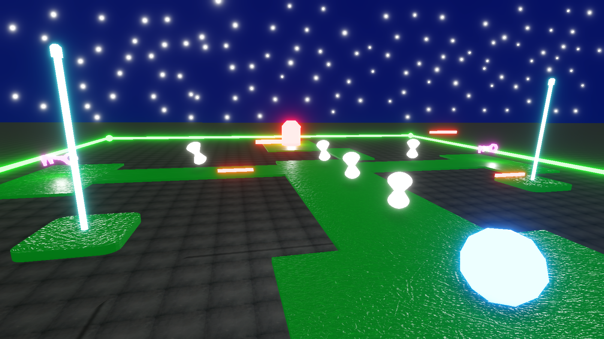
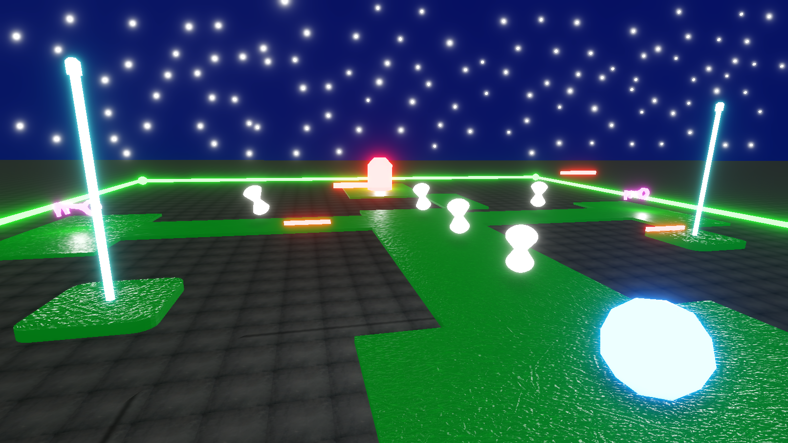

Welcome to the FDL Games site!
Well hello there, my name is frederik darling, and welocme to the world of FDL Games. I have been trying to make games for more than 10 years and now i am finally starting a company with the mission to release fun and interesting games. Feel free to check out other pats of the site. Tou will be able to learn more about me and my games that i have coming out.
 

Get ready for the first ever published game from FDL Games: Candy Shoot. In this Halloween inspired game, the player must shoot all of the approaching enemies and collect all of the candy that they contain. Play through different environments and try to beat your highscore!
A local multiplayer mode is also in development, where the player will be able To compete against one another to collect the most candy possible. The game will be released on Halloween October 31st 2022. The game will be available on Steam as a free to play title. Good value for money microtransactions and paid add-ons may be added.
The game jam demo can be found on itch.io by clicking here: https://frededarling42.itch.io/candy-shoot
A new experience from FDL Games is coming. In this game you control RollerBoy through vibrant and colorful levels and will be challenged to master six differnt game genres to be able to win. Within each world the player is exposed to new mehanics, with some of them being very familair while some others may not. Each world is its own genre of play and each world have a unique twist as well.
Play through the story of RollerBoy or return to one of the game world to beat your time score in arcade mode. With arcade mode, some replay value is added since the player will only get all of the achievements in the game by beating all the worlds with high time scores.
Click on the "Play RollerBoy" button to play a demo of the first world of the game as it looks like so far.
© FDL Games 2022